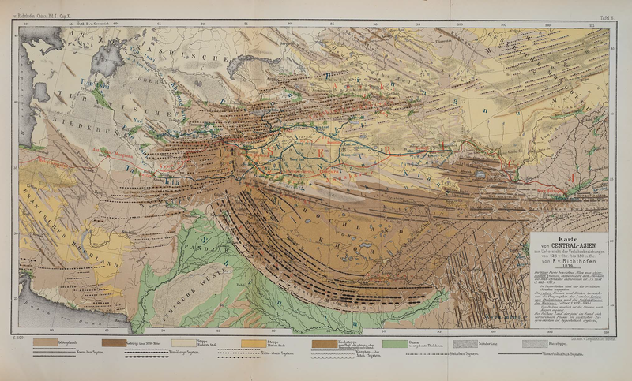

The Silk Road(s) can be described as three different, but overlapping, phenomena:
The Silk Road can be thought of as “The step-child of globalization”. The origin of the Silk Road can be traced to the presence of imperial Chinese soldiers and the silk they were paid with and used in commerce. Bartering with goods like silk was common due to the shortage of coins. Ideas, religions, technology, and trade goods flowed East and West across Asia and this conduit of regulated trade allowed for the spread of culture and economic growth. It created a stream of new materials with different goods traveling each direction. Jade was a prominent trade good even before silk. Livestock and horses were also among the most important trade goods. Animals were easy to transport because they could walk on their own. Another trade item, paper, was easy to transport because it was lightweight. Paper can also be considered more significant than silk because it spread new ideas and information, this exchange of ideas was probably more historically significant than any material goods traffic.
The routes that formed across Asia were used for travel as well as trade. Refugees, pilgrims, and diplomats all traversed the ancient highway. Ethnic groups like the Tatars, Huns, Goths, and others used the routes for migration. The people living and trading together on the silk road came from diverse religious and ethnic backgrounds. Conflict would interrupt trade, making coexistence essential. There were high levels of religious tolerance, making a virtue of necessity. It was an important region for diverse inter-religious development, most prominently Islam and Buddhism. There is also evidence of cultural syncretism where practices and beliefs melded.
The paths of the silk road were not fixed, they changed based on local politics and wars. The road passed through many different domains. It was a strategic asset to these kingdoms situated along the way, not just at the ends. Traveling on the silk road could be a dangerous trek. Bandits were prevalent, waiting to rob and kill approaching caravans. It was for this reason, as well as the difficulty of transporting goods over land, water travel was preferred where possible. Ships also made it easier to transport larger cargos, and this Indian Ocean trade would become more important economically. Few people made the journey across the entirely of the Silk Road. The long-distance travelers of this project are not representative of normal travel, in part because they are often traveling for religious purposes.

Caption: map of the Silk Road trade routes from Britannica.com.
In 1877, the German geographer Baron Ferdinand von Richthofen coined the term die Seidenstrasse (the Silk Road) to describe the trade routes by which Chinese silk was exported to the Mediterranean world in classical antiquity and the Middle Ages.[1]
Above: von Richthofen's map from his 1877 atlas. The Silk Road as he defined it is shown in red, cutting East-West across the center of the map; and in black, with a more complex network of lines.[2] Click here to open a larger version of the map in a new tab.
Below: the routes on von Richthofen's map as plotted on an interactive modern map. Some of his locations cannot now be precisely identified: his map did not have the precision made possible by GPS and satellite photography, and some locations may refer to old villages that do not now exist. Even rivers change course and in some cases have disappeared entirely.
The accounts of some of the travelers we have traced in this project were published only recently, but many others were published in the nineteenth or early twentieth centuries. Chief among these are the two-volume set Cathay and the Way Thither: Being a Collection of Medieval Notices of China, translated and edited by Sir Henry Yule, published by the Hakluyt Society in 1866 -- even before von Richthofen coined the term "Silk Road".[3]
Much of the important archeological and exploratory work that brought the Silk Road to public knowledge was carried out in the early twentieth century by Sir Aurel Stein (1862-1943). In common with many archeologists and explorers of his day, Stein's activity was driven not by disinterested scholarship but rather by the imperial ambitions of his adopted country, Great Britain; and, also in fellowship with his peers, his methods would not always withstand close ethical scrutiny today. Yet in spite of these personal and professional lapses, it is undeniable that he was an archeologist of great skill and dedication whose work remains fundamental to our knowledge of the Silk Road and its peoples a century later. (As a measure of this, most chapters in Valerie Hansen's recent book The Silk Road include passages, often many pages in length, detailing how Stein "discovered", or excavated, or visited, or interacted with, the site Hansen is currently discussing.) [4]
Caption: Map of the Taklamakan Desert and surrounding region from one of Stein's publications.[5] Click the image for a zoomable image on the source site.
In the twenty-first century, the knowledge of the Silk Road has not only been kept alive, but it is also expanding with discoveries of documents, records, and materials from the Silk Road's heyday. Not only though such discoveries are the Silk Road being remembered, but also through song and music. Yo-Yo Ma is a popular and world-renowned cellist. Born and raised in Paris, France in a Chinese household, Yo-Yo Ma moved to New York for his education in music composition. In 1998, Yo-Yo Ma established a Silk Road triubute music group known as "Silkroad" or "The Silk Road Ensemble". The group included such musicians as Osvaldo Golijov, Leon Kirchner, Zhao Lin, Christopher Rouse, Esa-Pekka Salonen, Giovanni Sollima, Bright Sheng, Tan Dun, and John Williams. "Silk Road" was able to produce 100 new works from composers and arrangers around the globe, and released eight albums, all of which, are pieces dedicated to the history and culture behind the silk road. One of their most reacent pieces is Osvaldo Golijov’s Falling Out of Time, a song described by Golijov as an "exquisite and nuanced interpretation of the story portray[ing] a musical, mythical walk that traverses vast and varied emotional landscapes to finally arrive at a place where breathing is again possible".
Many webpages are dedicated to the preservation of the history and culture of the Silk Road. The UNESCO Silk Road World Heritage Site is one webpage that dedicates its resources to finding and marking maps of explorers, travelers, merchants, and other significant figures from the Silk Road by country. The site has over 30 countries listed with an easy-to-access map to discover people from a certain country. UNESCO, The United Nations Educational, Scientific and Cultural Organization, was established in 1972 and not only maintains the preservation of history and culture of the silk road but also other eras of history such as the Colonization of the United States and world conflicts such as World War 1 and World War 2.
The closest thing to the Silk Road in the modern era would have to be China’s new infrastructure plan, known as the "New Silk Road" initiative. The plan is estimated to spend over $17 trillion (USD) by 2027. At least 157 nations and international organizations have signed up with plans to create and update current and new roads, update China's railroad to a high-speed rail line. Even though the infrastructure plan is supported by 157 nations, others oppose the plan, including India. The infrastructure plan is not only a way to improve the travel conditions for civilians but also a way for countries to relieve their debt.
1. For further detail, see the article "The Invention of the Silk Road, 1877" by Tamara Chin, published in the journal Critical Inquiry Vol. 40 (2013), pp. 194-219. (This article may or may not be free access for all readers.)
3. Volume 1 here; Volume 2 here.
4. Hansen, Valerie. The Silk Road: A New History with Documents. Oxford University Press, 2017. This was our principal textbook for the class that created the present web project you are exploring. We found it enjoyable, learned, and informative; if it had a shortcoming, it was that by the later chapters, we felt that we had read more than enough about Sir Aurel Stein's exploits, and "Oh look, it's Stein again" became a sort of running gag. Yet perhaps we should see this not as a rut in which Hansen was stuck, but as a genuine reflection of Stein's stature and significance.
{kind=link}
{kind=link}